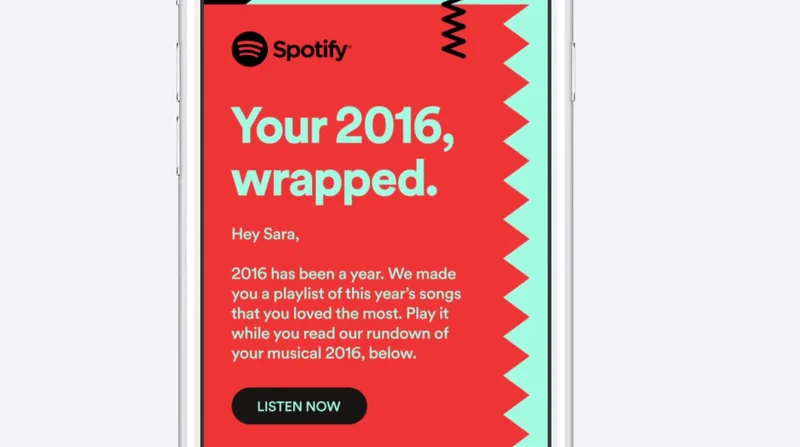
Spotify / 2016
Wrapped
Spotify goes behind the scenes of its 2020 recap, from the data to the cards people share.
The campaign archive / Edition 03 / Data first

“The best data ideas don’t look like data. They look like a gift, a joke or a moment you recognise.”
Edition 02 showed campaigns that kept score. This edition looks at campaigns made out of data, and asks one question of each. Did the data aim the work, or was it the show?
15 case studies / 1975 to 2020
Opening story / Spotify / 2016
In December 2016 Spotify turned each listener’s year into a personal recap. Its toughest month became its biggest moment.
01 / The finding
Three of the four campaigns that used data to decide who saw an ad, and when, publish a modelled effect. Prospan even tested its targeting against a control group. None of the five that made data the show does. They report shares, downloads and sales trends.
The claims tell the same story over time. Pepsi’s taste test of 1975 left no public proof of its effect, while Aldi’s savings challenge in 2013 came with econometrics. Across the series, modelled effects number 1 in Edition 01, 13 in Edition 02, 6 here, 2 in Edition 04, none in Edition 05, none in Edition 06 and 3 in Edition 07.
Data campaigns ask something of people too. Wrapped is loved, and it has also been criticised as surveillance packaged as fun. The best ideas here give people something back for the data they use.
Modelled effectSales trendReach only or archival
02 / The patterns
Five of the series’ six mechanisms appear here, and participation leads. Data is easy to share when it is about you. Choose one to filter the archive.
Stage the benefit so people can see it for themselves.
Say the uncomfortable thing first and make it the point.
Hand the audience a part to play and let them spread it.
Show people a judgement they did not know they held.
Tie the brand to an occasion people already keep.
03 / The screening room
Four films from brand and agency channels. Look for where the data shows up on screen, then read what it can prove.

Spotify / 2016
Spotify goes behind the scenes of its 2020 recap, from the data to the cards people share.
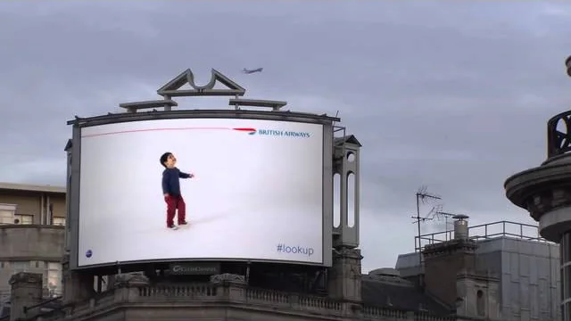
British Airways / 2013
One plane, one billboard and a child pointing at the sky.
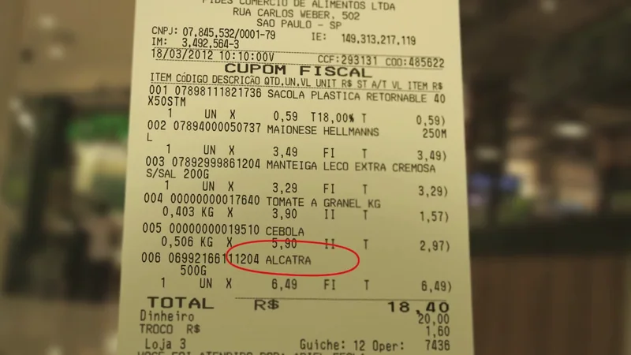
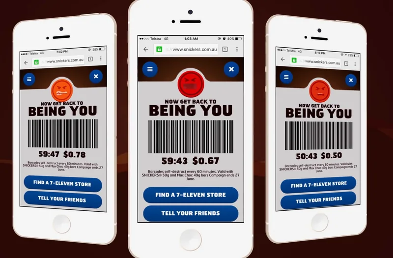
04 / The collection
See the work alongside the data that shaped it. Open each case for the film, image credit, my take and how it was measured.
Modelled effectSales trendSurveyReach only or archival
15 campaigns
Cannes Creative Effectiveness entry, 2018 · Spotify
In December 2016 Spotify sent each listener a recap of their year: the artists they loved, how much they listened, and a ‘Your Top Songs of 2016’ playlist. A simpler ‘Year in Music’ had run in 2015.
If your product already holds a story about each customer, hand it back to them and they will do the distribution.
Wrapped is the best data campaign of its era and a reminder of how much a company knows about you. Both are true, and the second is why it has to stay this generous.
Image: Spotify, 2016 Wrapped recap email · still from The One Show entry
December was Spotify’s toughest month. People broke their routines over the holidays and opened the app less, just when the company wanted new subscribers.
Listening data became something people wanted to show off. Wrapped has returned every December since, and it has grown from a campaign into a cultural event of its own.
It flatters the listener. The data says something about you, and sharing it says something about you too.
Spotify reports 5.9m new Premium subscribers, conversions up 50% on the year before and faster growth in monthly users, reversing the usual December dip. These are the company’s own figures in an awards entry, and the summary doesn’t separate Wrapped from Spotify’s other December activity.
The entry compares December 2016 with earlier Decembers on subscriptions, conversions and monthly users. It is a before-and-after comparison, not a controlled test.
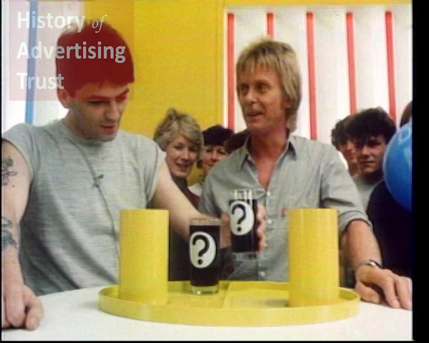
Pepsi / 1975 / Exposing an assumptionThe Pepsi ChallengeA sip test that turned taste into a statistic.Data as the claim · Blind taste-test results 1975Year the taste test began · legacy factPepsiCo · running since 1975
From 1975 Pepsi set up blind taste tests in public. Shoppers sipped two unmarked colas, picked a favourite and were then shown which one they had chosen.
A claim built on data is only as strong as the method behind it, and rivals will check the method.
The cleverest claim in this edition, and the shakiest proof. Coca-Cola’s eventual answer, New Coke, belongs in Edition 05.
Image: Pepsi, Challenge John (UK, 1983) · History of Advertising Trust
Pepsi was fighting Coca-Cola, the bigger and older brand, in what became known as the cola wars.
The argument moved from image to evidence. If people preferred Pepsi with the labels off, the label was all Coke had left.
It turns the viewer into the judge. You can’t watch it without wondering which cup you would pick.
Pepsi’s claims rest on its own tests, run single-blind, so the people serving the colas knew which was which. Later research found that tasters tend to prefer the sweeter drink after a single sip, which suits Pepsi. No reliable public figure isolates the challenge’s effect on sales.
There is no published effectiveness paper. The record is the taste test itself and the arguments about how it was run.
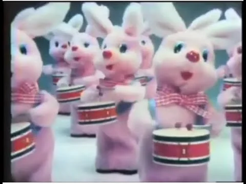
Duracell / 1978 / DemonstrationLasts LongerA battery that sold a measurement.Data as the claim · Battery performance tests 30%+Market share by 1989, from 4%IPA 1990 · Duracell UK
The advertising compared Duracell with ordinary zinc-carbon batteries and showed the performance gap on screen.
If your product wins a test, make the test the advertising.
Long before anyone said ‘data-driven’, Duracell built a decade of advertising on one test result.
Image: Duracell drumming-bunnies commercial (1979) · Bionic Disco archive upload
In 1978 Duracell had about 4% of the UK battery market. Few people knew the brand, and fewer cared about battery quality.
A dull purchase became a contest you could watch. By 1989 Duracell led the market with more than 30%, and it held a price premium.
It turns an invisible quality, how long a battery lasts, into something you watch happen.
Penetration rose from 24% in 1980 to 61% in 1989, and share from 4% to more than 30%, with a price premium held throughout. The paper reports trends and awareness rather than a modelled estimate of the advertising’s own effect.
The 1990 paper tracks penetration, share, awareness and price across a decade, and uses 1989 research to show the campaign hadn’t worn out.
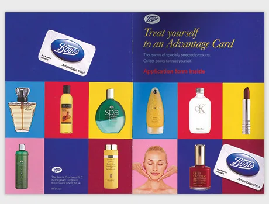
Boots / 1997 / ParticipationThe Advantage CardA late loyalty card that paid its way quickly.Data as the product · Members’ shopping records 8%Share of sales made with the cardIPA 1998 · 1 Star · J. Walter Thompson for Boots The Chemist
The Advantage Card rewarded shoppers with points and gave Boots a record of what each member bought. J. Walter Thompson’s advertising built awareness of the card fast.
A loyalty scheme is a data product first. The advertising’s job is to make people want to carry it.
The card did the persuading here. The advertising only had to get it into people’s purses and wallets.
Image: Boots Advantage Card launch artwork (1997) · Boots Heritage
Boots came to loyalty cards later than other retailers.
The card became part of how Boots worked. By March 1998 Boots credited 8% of its sales to it, and it was shaping the company’s strategy.
It made a data relationship feel like a reward. Members saw points, and Boots saw what they bought.
Boots credited 8% of its sales to the card within months, and the paper links it to 19% growth in shareholder value. Sales made with a card are not the same as extra sales, and the summary doesn’t estimate how many would have happened anyway.
The paper tracks card awareness and the share of sales made with the card, and argues the scheme might not have survived without the advertising.
IPA 2014 · Bronze · Publicis London for L’Oréal
Publicis skipped the ‘labcoat lecture’ and challenged women to try the cream for 14 days. Each sample kit came with a ‘Wrinkle Reader’, so people could measure their own skin before and after.
When people stop trusting your data, let them make their own.
This is the one I’d steal. If your audience is sick of your statistics, give them the means to produce their own.
Image: Garnier and Publicis, UltraLift Challenge with Davina McCall (2012) · archive upload
UltraLift had lost 30% of its sales in four years. Garnier had scientific proof that it worked, but shoppers had stopped believing the science in anti-ageing ads.
The proof moved from the lab to the bathroom mirror, and real people talked about their own results.
The Wrinkle Reader makes the customer the scientist.
Unit sales rose 40% within 18 months, penetration rose 16%, and 239,000 people asked for a sample kit. The £1.91 is revenue rather than profit, and the summary doesn’t describe how it was modelled.
The case tracks sample-kit requests, unit sales and penetration from the start of the challenge and reports a revenue return on the marketing.
APG 2013 · Bronze · Ogilvy for Unilever
Ogilvy Brazil linked a recipe database to supermarket tills. When a shopper bought Hellmann’s, the receipt printed a recipe using it and other items in their basket.
The best place for an idea is the moment the customer is already holding in their hand.
A tiny idea with a big lesson. The data you already have is often more useful than the data you wish you had.
Image: Hellmann’s and Ogilvy Brazil, Recipe Receipt (2012) · still from the D&AD archive
Most Brazilian households had a jar of Hellmann’s in the fridge, but they didn’t buy it often. The brand needed people to use more of it.
The receipt, the most ignored piece of paper in a shop, became a prompt to use the product.
It uses data people never think of as data: their own shopping list.
Sales rose 44% in the stores taking part, according to the case. Results from a small number of selected stores are an early sign rather than proof of a wider effect, and the summary doesn’t say what they were compared with.
The case reports sales in the selected stores during the activity. It is a store-level trial, not a controlled national test.
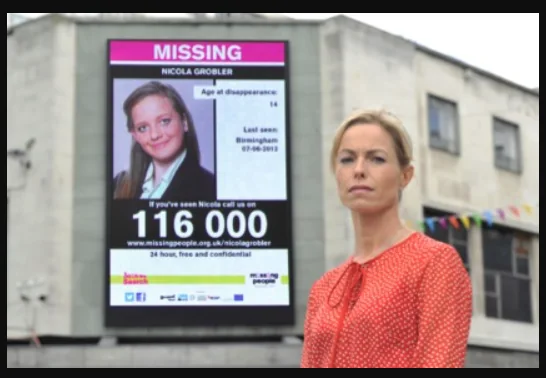
Missing People / 2012 / ParticipationLive AppealsUrgent appeals, shown in the region where someone went missing.Data as aim · Where and when someone went missing +22%More people found safe and wellIPA case, 2014 · Missing People and the Outdoor Media Centre
In 2012 the charity and the Outdoor Media Centre began putting urgent appeals on digital outdoor screens donated by media owners, regionalised so each appeal appeared where it mattered.
Data about place and time can matter more than a big budget.
The most important number in this edition isn’t a return on investment. It’s people found.
Image: Missing People and the Outdoor Media Centre, 2012 launch photograph · Grand Visual
Around 250,000 people go missing in the UK each year. Missing People had a small budget, so its appeals reached few people.
A charity with almost no media money gained a national network of screens that could publish an appeal instantly.
It treats outdoor media like a newsroom, publishing the moment the story breaks.
The case reports 22% more people found safe and well, 226% more contacts with the charity and 38% higher awareness. Many things affect whether someone is found, and the summary doesn’t isolate the screens’ contribution.
The case compares outcomes before and after the partnership began. It is a trend, not a controlled comparison.
D&AD 2014 · Yellow Pencil · OgilvyOne Worldwide London for British Airways
OgilvyOne London built digital billboards in Piccadilly Circus and Chiswick that tracked BA flights. When one passed overhead, a child on screen got up and pointed at it, with its flight number and where it had come from.
Real-time data is most powerful when it shows people something true about the world around them.
Probably the most beautiful use of data here, and the least proven. Both of those are worth knowing.
Image: British Airways and OgilvyOne, Look Up (2013) · still from British Airways’ film
Flying had become routine. ‘Look Up’ was part of British Airways’ wider ‘Magic of Flying’ campaign, which set out to bring back some of the wonder.
An ad that would normally ask you to look at it asked you to look at the sky.
The child’s gesture does the work. Everyone has pointed at a plane, and everyone looks up when someone else does.
The public record is about fame: awards including a D&AD Yellow Pencil, and widely shared films. No published figure links the billboards to bookings or brand measures.
There is no effectiveness paper in the public record. Its success is measured in coverage and awards.
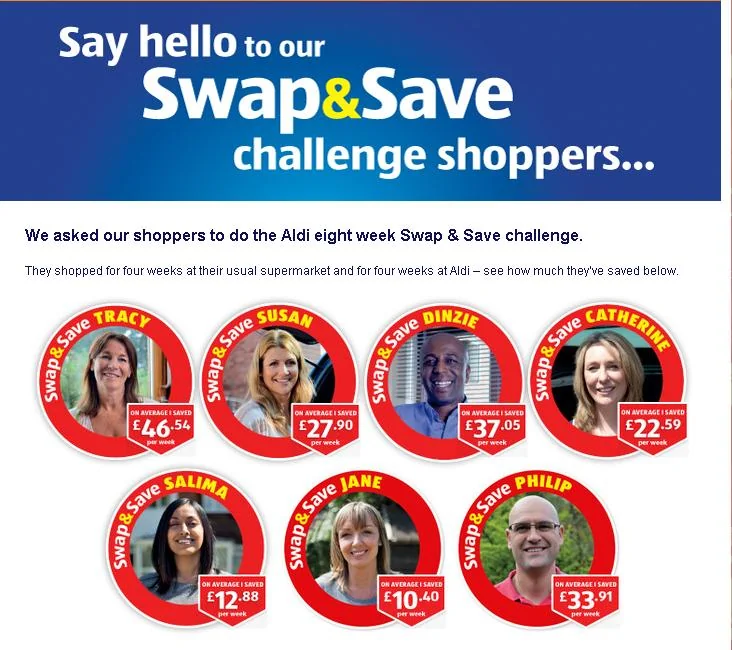
Aldi / 2013 / Exposing an assumptionSwap & Save ChallengeA supermarket that let shoppers’ savings make the argument.Data as the claim · Real shoppers’ savings £4.72Return per £1 in the UKIPA 2014 · Silver · McCann Manchester for Aldi UK & Ireland
The Swap & Save Challenge followed real shoppers as they moved their main shop to Aldi and showed how much they saved.
Let customers run the test, then measure what it did.
Put this next to the Pepsi Challenge. Same idea, a customer test as the claim, but thirty-eight years later it comes with a model and a return.
Image: Aldi Swap & Save shopper artwork (2013) · reproduced by Gm&Co
Aldi’s ‘Like Brands’ campaign had improved views of its quality. By 2013 range perception and social stigma were still holding shoppers back.
Shopping at Aldi stopped looking like a compromise and started looking like common sense.
Real people adding up their own savings carry more weight than any price claim a supermarket could make.
Swap & Save contributed just under 15% of UK sales, £68m of incremental revenue and a ROMI of 4.72. In Ireland it contributed 8%, €11m and a ROMI of 8. The summary doesn’t say whether the returns are revenue or profit.
Econometrics estimated the campaign’s contribution to sales in each country and converted it into incremental revenue and a return.
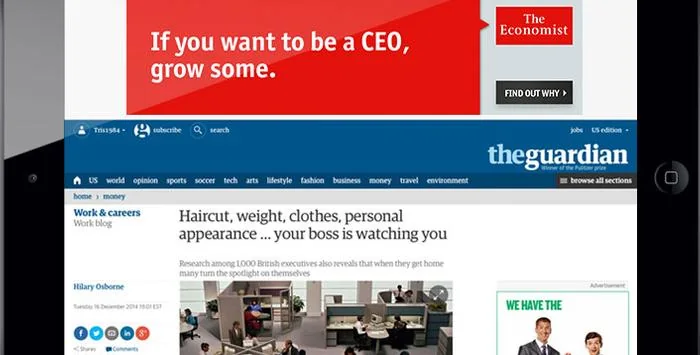
The Economist / 2014 / Exposing an assumptionRaising EyebrowsAds written like headlines, placed next to the news that provoked them.Data as aim · Live news and audience data 64,000Paid subscriptionsIPA 2016 · Gold · Proximity London and UM for The Economist
Proximity London set up ‘newsrooms’ to write topical ad copy, and UM London used programmatic platforms to place it next to related news, reaching people when they were likely to be receptive.
If your product is timely, let the advertising be timely too, and let data decide where it appears.
This is the case I’d show anyone who thinks brand and performance are separate jobs.
Image: The Economist and Proximity London, Raising Eyebrows digital ad · Direct New Ideas
The Economist wanted younger readers. Its journalism was not in question. Getting new people to notice it was.
The advertising started to behave like the product: quick, topical and provocative.
Each ad reads like the start of an argument. It invites you to disagree, then to subscribe.
The case credits the activity with 64,000 paid subscriptions and more than five million new retargetable users. The £25 return is revenue projected over subscribers’ lifetimes, so it depends on assumptions about how long they stay.
The case counts subscriptions attributed to the programmatic activity and values them using projected subscriber lifetime revenue.
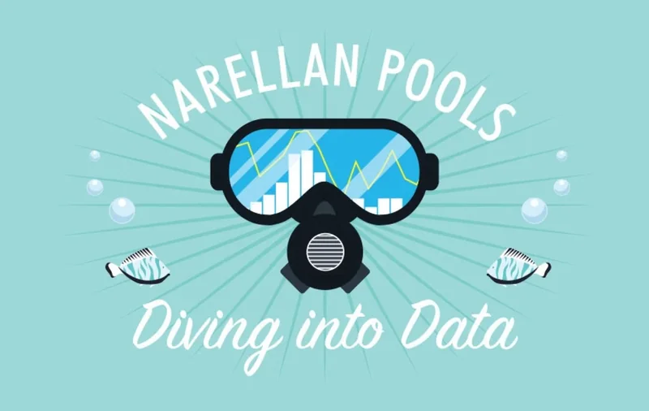
Narellan Pools / 2015 / Owning a momentTwo Hot DaysA pool builder that only advertised after two hot days in a row.Data as aim · Forecast and live temperatures 54:1Incremental return on investmentIPA 2016 · Gold · AFFINITY for Narellan Pools
AFFINITY mined the data and found purchase enquiries rose after two or more days of higher-than-average temperatures. A weather feed switched the media on when those conditions arrived and off when they didn’t.
Find the signal that comes before the sale, and spend only when it fires.
A small business, a smaller budget and one of the best returns in the whole archive. Data isn’t only for big brands.
Image: Narellan Pools, Diving into Data · AFFINITY’s case film artwork
Pool sales in Australia were in long-term decline as homes became less affordable and more people lived in apartments.
The budget moved from the calendar to the weather, spending only when people were already thinking about a pool.
It is the simplest data idea here. Nobody wants a pool on a cold day.
Leads rose 11% and sales 23% while media spend fell by 30%, for an incremental return of 54 to 1. The IPA summary describes it as a revenue return. A hot summer helps a pool business anyway, which is exactly what the estimate has to separate out.
Media switched on and off with the weather, and results were compared with the year before.
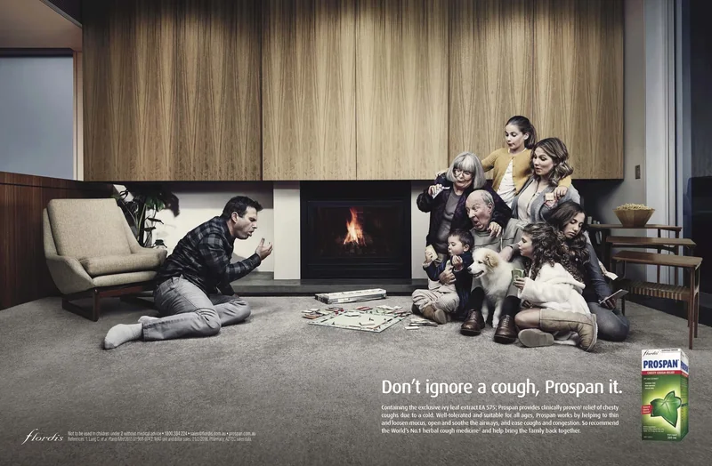
Prospan / 2016 / Owning a momentThe Cough PredictorA cough remedy that advertised just before the coughs arrived.Data as aim · Search and social signals +54%Click-through against a control groupIPA 2018 · Silver · AFFINITY for Flordis
Search and social data revealed mothers’ doubt about coughs, which became the message, ‘Don’t ignore a cough’. AFFINITY then built an algorithm that predicted outbreaks of colds and switched programmatic ads on when coughs were likely to rise.
Predict the need, then be the first brand there.
A control group in a cough remedy campaign. More brands should be this curious about whether their targeting works.
Image: Flordis and AFFINITY, Don’t Ignore a Cough (2016) · reproduced by B&T
New guidance said children shouldn’t be given cough and cold medicines, natural rivals multiplied, and mums tended to ‘wait and see’ before treating a cough.
The brand turned up at the moment the problem appeared, with a message aimed at the hesitation.
The idea is all in the timing. The same ad a week later would have been too late.
Clicks ran 54% higher than a control group, and sales grew 10% in six months while the category fell 8.5% in a very warm winter. Market share rose 18.5%. The control group tests the targeting, and the sales figures are a trend set against the category.
Ads served by the predictor were compared with a control group on click-through, and sales were tracked against a declining category.
Australian Effie Awards 2017 · Bronze · Clemenger BBDO Melbourne for Mars Australia
Clemenger BBDO Melbourne built the Hungerithm. It monitored the mood on Twitter and lowered the price of Snickers at 7-Eleven stores as people got angrier, a live version of ‘You’re not you when you’re hungry’.
Put a familiar mechanic, a discount, inside an idea people want to watch.
Brilliant fun, but it’s a discount with a story attached. I’d want to know how much the story added beyond the price cut.
Image: Snickers and Clemenger BBDO Melbourne, Hungerithm (2016) · still from The One Show entry
Chocolate bars had been declining in Australia for years, and millennials were drifting to bite-size and healthier snacks, or to whatever was on promotion.
A price promotion became a piece of entertainment people checked and shared.
It makes the internet’s bad mood useful. Every angry headline was a coupon.
The case reports a reach of over 4 million 18 to 35 year olds and 10% sales growth at a key retailer. Other entries quote much bigger unit figures for 7-Eleven, so the measures differ by source. Either way it is a sales trend during a price promotion.
The case reports Snickers sales at the retailer during the activity. A price cut lifts sales by itself, and the summary doesn’t separate that out.
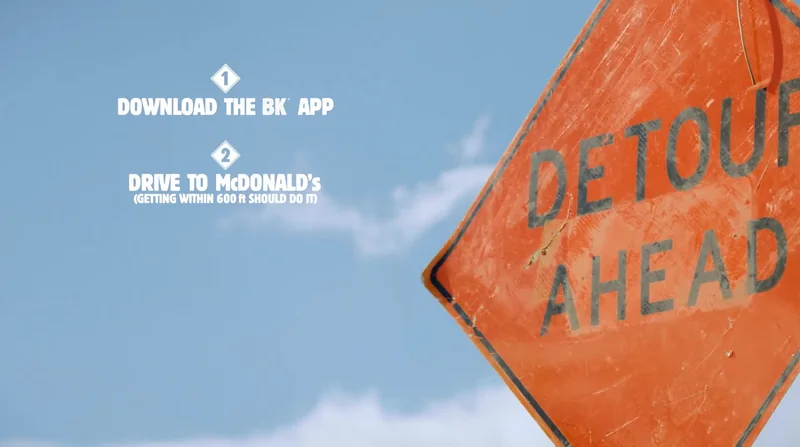
Burger King / 2018 / Reframed weaknessWhopper DetourA one-cent Whopper, unlocked only at McDonald’s.Data as the show · Phone location near McDonald’s 1.5mApp downloadsEffie US 2020 · Grand Effie · FCB New York for Burger King
FCB New York geofenced around 14,000 McDonald’s restaurants. Anyone who opened the Burger King app near one could order a Whopper for one cent, then collect it from the nearest Burger King.
Use your competitor’s scale as your media plan.
The cheekiest idea in the edition. I’d still want to know how many of those downloads were ordering again a month later.
Image: Burger King, FCB New York and O Positive, The Whopper Detour (2018) · The One Show archive
Burger King had far fewer restaurants than McDonald’s and wanted more people to order through its app.
Its rival’s biggest strength, being everywhere, became the delivery mechanism for Burger King’s app.
It’s a dare. To get the deal you had to stand outside McDonald’s and order a Burger King.
Burger King’s parent company reported 1.5 million downloads, and the work won the Grand Effie in the US in 2020. The Effie entry also claims incremental revenue, which this archive couldn’t check against the original. Downloads show behaviour, not lasting sales.
The public record counts downloads during the offer. A one-cent price explains much of the spike, which is why later sales matter more.
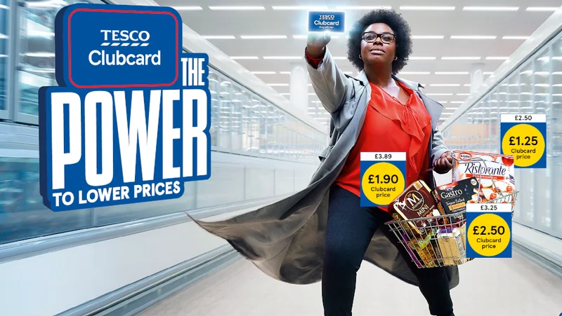
Tesco / 2020 / Reframed weaknessClubcard PricesA loyalty card that started lowering prices at the till.Data as the product · Clubcard membership and shopping data £3.38Profit per £1 investedIPA 2024 · BBH and EssenceMediacom for Tesco
In 2020 Tesco turned Clubcard into instant lower prices for members. BBH’s advertising showed shoppers with ‘the power to lower prices’ and their delighted ‘thrill face’, and data-driven media reached people who didn’t yet use the card, including by location.
If a loyalty scheme feels slow, make the reward immediate and make the advertising about the feeling.
Twenty-five years after it launched, Clubcard is still Tesco’s best data asset. This is when it started paying customers back on the spot.
Image: Tesco and BBH London, The Power to Lower Prices (2020) · Little Black Book
Tesco had run Clubcard since 1995, and it had settled into being an established points scheme.
The card stopped being something you saved up for later and became a reason to choose Tesco today.
The ‘thrill face’ turns a discount into a feeling you can see.
The case estimates 10.7m new Clubcard members, a £627m net sales inflow and £3.38 of profit for every £1 invested between 2020 and 2023. Much of the value sits in the prices themselves, so the estimate has to separate the advertising from the offer.
The paper estimates new members, sales inflow and profit return for 2020 to 2023, including targeted media aimed at people who didn’t yet use the card.
No campaigns match. Try clearing the search or setting a filter back to All.
05 / The evidence
When data decides who sees an ad and when, the same data can show what happened next. Prospan held back a control group, and Narellan Pools switched its media on and off with the weather.
When data is the entertainment, the record usually counts shares, downloads and sales in the weeks around it. Those numbers show attention. They rarely isolate the effect.
A test or a statistic can be the whole idea. It is only as good as the method behind it, which is why Pepsi’s single-sip test still gets argued about and Garnier let customers take the measurement themselves.
Loyalty cards turn shopping into a data relationship. The value shows up in membership and sales, and the proof depends on separating the card from the prices behind it.
Every case gets one of five ratings, strongest first: modelled effect, sales trend, survey, reach only and archival. Here an outcome that moved, such as people found or apps downloaded, counts as a sales trend. A legacy fact, such as the year the Pepsi Challenge began, is marked so it isn’t read as a result.
Each case made data part of the idea, changed how people saw a brand or a product, and has a published record. Image credits, films and sources for the results are listed separately in each case.
06 / Out now / Edition 04